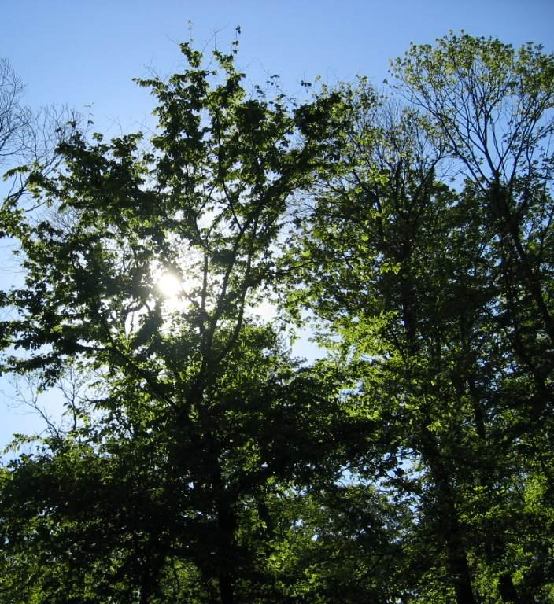

Listen to 'Emerald Forest' in English

Copyright Michel Galiana 01.04.2006 (c) (r) All rights reserved |
Transl. Christian Souchon 01.04.2006 (c) (r) All rights reservedII EMERALD FOREST It is haunted by gem, that I return to rest! In it the winds calm down and the sources suspend The space and the movement whose runs are made to end In an illusive field flagged with tatters at best. Twas a triumph with flags and altars of repose: Cold heavens lit the Bears high up in their abyss. You are driven back to your ultimate recess: A green country that is beneath your lids enclosed. This is a starred world where placid power lies, Replete with sparkling stones and gleams, where will arise - Shining forth like a jewel - an immobility Where dawn would set ablaze pyres of silence so staunch, That only song pervades the trench from where they launch, In hails of shafts, slumbers full of disloyalty. January 27th 1990
Note :
| Encore une tentative de décrire l'indescriptible, le passage de l'état éveillé au sommeil: un kaléidoscope où domine le vert apparaît sous les paupières fermées. Des bribes de souvenirs et d'impressions flottent dans la pensée qui s'engourdit. Seule la musique surnage encore un moment dans la conscience du mélomane qui s'endort. | Another attempt to describe the indescribable: the transition from the waking state to sleep. A kaleidoscope dominated by green appears under closed eyelids. Fragments of memories and impressions float in the numbing thought. Only music remains for a moment in the consciousness of the music lover who falls asleep |
Listen to 'Emerald Forest' in English